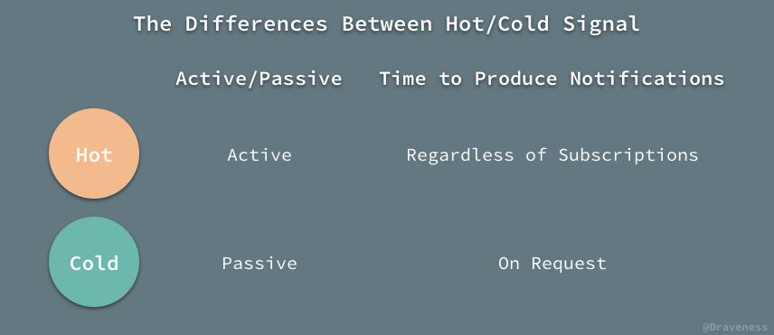
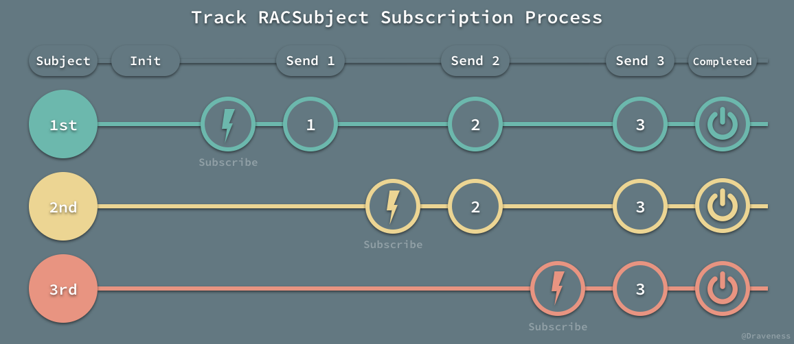
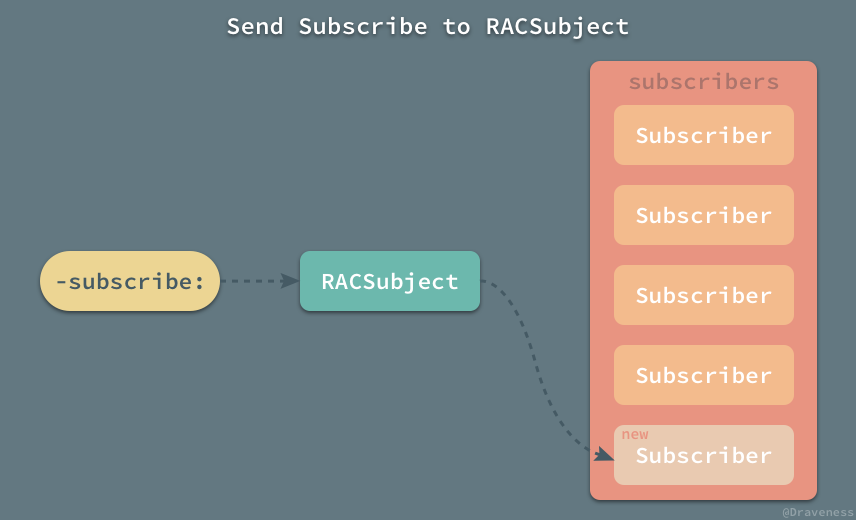
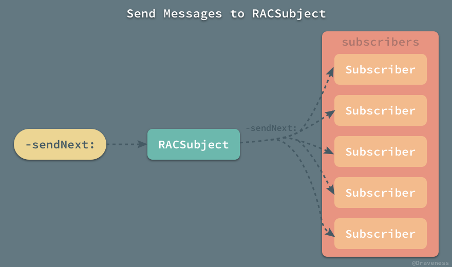
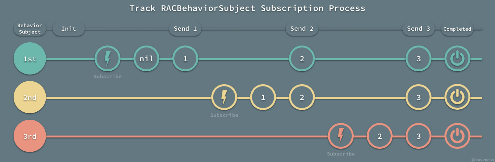
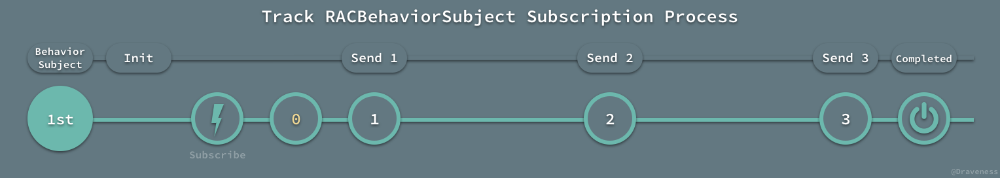
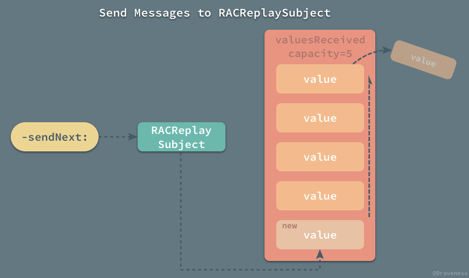
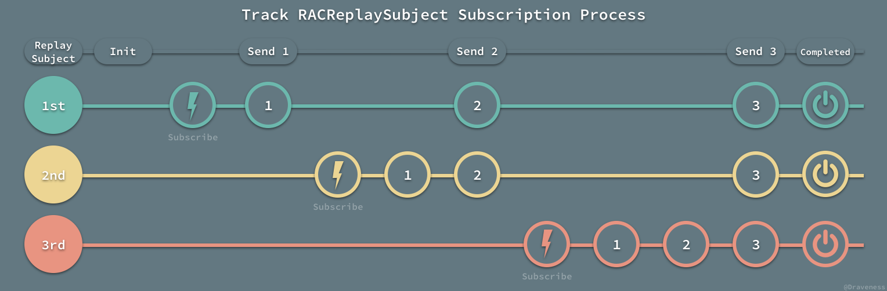

<!DOCTYPE HTML>
<html lang="" >
    <head>
        <meta charset="UTF-8">
        <meta content="text/html; charset=utf-8" http-equiv="Content-Type">
        <title>RACSubject · GitBook</title>
        <meta http-equiv="X-UA-Compatible" content="IE=edge" />
        <meta name="description" content="">
        <meta name="generator" content="GitBook 3.2.3">
        
        
        
    
    <link rel="stylesheet" href="../../gitbook/style.css">

    
            
                
                <link rel="stylesheet" href="../../gitbook/gitbook-plugin-highlight/website.css">
                
            
                
                <link rel="stylesheet" href="../../gitbook/gitbook-plugin-search/search.css">
                
            
                
                <link rel="stylesheet" href="../../gitbook/gitbook-plugin-fontsettings/website.css">
                
            
        

    

    
        
    
        
    
        
    
        
    
        
    
        
    

        
    
    
    <meta name="HandheldFriendly" content="true"/>
    <meta name="viewport" content="width=device-width, initial-scale=1, user-scalable=no">
    <meta name="apple-mobile-web-app-capable" content="yes">
    <meta name="apple-mobile-web-app-status-bar-style" content="black">
    <link rel="apple-touch-icon-precomposed" sizes="152x152" href="../../gitbook/images/apple-touch-icon-precomposed-152.png">
    <link rel="shortcut icon" href="../../gitbook/images/favicon.ico" type="image/x-icon">

    
    
    <link rel="prev" href="RACSignal.html" />
    

    </head>
    <body>
        
<div class="book">
    <div class="book-summary">
        
            
<div id="book-search-input" role="search">
    <input type="text" placeholder="Type to search" />
</div>

            
                <nav role="navigation">
                


<ul class="summary">
    
    

    

    
        
        
    
        <li class="chapter " data-level="1.1" data-path="../../">
            
                <a href="../../">
            
                    
                    iOS 开发
            
                </a>
            

            
            <ul class="articles">
                
    
        <li class="chapter " data-level="1.1.1" data-path="../../ObjC-Basic/">
            
                <a href="../../ObjC-Basic/">
            
                    
                    Objective-C 语言基础
            
                </a>
            

            
            <ul class="articles">
                
    
        <li class="chapter " data-level="1.1.1.1" data-path="../../ObjC-Basic/Class.html">
            
                <a href="../../ObjC-Basic/Class.html">
            
                    
                    类与对象
            
                </a>
            

            
        </li>
    
        <li class="chapter " data-level="1.1.1.2" data-path="../../ObjC-Basic/Block.html">
            
                <a href="../../ObjC-Basic/Block.html">
            
                    
                    Block 编程
            
                </a>
            

            
        </li>
    
        <li class="chapter " data-level="1.1.1.3" data-path="../../ObjC-Basic/Runtime.html">
            
                <a href="../../ObjC-Basic/Runtime.html">
            
                    
                    Objective-C Runtime
            
                </a>
            

            
        </li>
    
        <li class="chapter " data-level="1.1.1.4" data-path="../../ObjC-Basic/MM.html">
            
                <a href="../../ObjC-Basic/MM.html">
            
                    
                    Objective-C 内存管理
            
                </a>
            

            
        </li>
    
        <li class="chapter " data-level="1.1.1.5" data-path="../../ObjC-Basic/Runloop.html">
            
                <a href="../../ObjC-Basic/Runloop.html">
            
                    
                    Runloop
            
                </a>
            

            
        </li>
    

            </ul>
            
        </li>
    
        <li class="chapter " data-level="1.1.2" data-path="../../Cocoa-Touch/">
            
                <a href="../../Cocoa-Touch/">
            
                    
                    Cocoa Touch
            
                </a>
            

            
            <ul class="articles">
                
    
        <li class="chapter " data-level="1.1.2.1" data-path="../../Cocoa-Touch/Event-Handling.html">
            
                <a href="../../Cocoa-Touch/Event-Handling.html">
            
                    
                    事件处理
            
                </a>
            

            
        </li>
    
        <li class="chapter " data-level="1.1.2.2" data-path="../../Cocoa-Touch/UIApplication.html">
            
                <a href="../../Cocoa-Touch/UIApplication.html">
            
                    
                    UIApplication
            
                </a>
            

            
        </li>
    
        <li class="chapter " data-level="1.1.2.3" data-path="../../Cocoa-Touch/UIView-Basic.html">
            
                <a href="../../Cocoa-Touch/UIView-Basic.html">
            
                    
                    UIView
            
                </a>
            

            
        </li>
    
        <li class="chapter " data-level="1.1.2.4" data-path="../../Cocoa-Touch/UIViewController.html">
            
                <a href="../../Cocoa-Touch/UIViewController.html">
            
                    
                    UIViewController
            
                </a>
            

            
        </li>
    
        <li class="chapter " data-level="1.1.2.5" data-path="../../Cocoa-Touch/Animation.html">
            
                <a href="../../Cocoa-Touch/Animation.html">
            
                    
                    动画
            
                </a>
            

            
        </li>
    
        <li class="chapter " data-level="1.1.2.6" data-path="../../Cocoa-Touch/Network.html">
            
                <a href="../../Cocoa-Touch/Network.html">
            
                    
                    网络编程
            
                </a>
            

            
        </li>
    
        <li class="chapter " data-level="1.1.2.7" data-path="../../Cocoa-Touch/Multithreading.html">
            
                <a href="../../Cocoa-Touch/Multithreading.html">
            
                    
                    并发编程
            
                </a>
            

            
        </li>
    
        <li class="chapter " data-level="1.1.2.8" data-path="../../Cocoa-Touch/File-System.html">
            
                <a href="../../Cocoa-Touch/File-System.html">
            
                    
                    文件系统
            
                </a>
            

            
        </li>
    
        <li class="chapter " data-level="1.1.2.9" data-path="../../Cocoa-Touch/Design.html">
            
                <a href="../../Cocoa-Touch/Design.html">
            
                    
                    设计模式
            
                </a>
            

            
        </li>
    
        <li class="chapter " data-level="1.1.2.10" data-path="../../Cocoa-Touch/Performance.html">
            
                <a href="../../Cocoa-Touch/Performance.html">
            
                    
                    性能
            
                </a>
            

            
        </li>
    

            </ul>
            
        </li>
    
        <li class="chapter " data-level="1.1.3" data-path="../../Swift/">
            
                <a href="../../Swift/">
            
                    
                    Swift
            
                </a>
            

            
            <ul class="articles">
                
    
        <li class="chapter " data-level="1.1.3.1" data-path="../../Swift/Class.html">
            
                <a href="../../Swift/Class.html">
            
                    
                    类与对象
            
                </a>
            

            
        </li>
    
        <li class="chapter " data-level="1.1.3.2" data-path="../../Swift/Struct-And-Enum.html">
            
                <a href="../../Swift/Struct-And-Enum.html">
            
                    
                    结构体与枚举
            
                </a>
            

            
        </li>
    
        <li class="chapter " data-level="1.1.3.3" data-path="../../Swift/Function-And-Closure.html">
            
                <a href="../../Swift/Function-And-Closure.html">
            
                    
                    函数与闭包
            
                </a>
            

            
        </li>
    

            </ul>
            
        </li>
    
        <li class="chapter " data-level="1.1.4" data-path="../../Interview/">
            
                <a href="../../Interview/">
            
                    
                    面试问题
            
                </a>
            

            
            <ul class="articles">
                
    
        <li class="chapter " data-level="1.1.4.1" data-path="../../Interview/iOSInterviewQuestions/">
            
                <a href="../../Interview/iOSInterviewQuestions/">
            
                    
                    《招聘一个靠谱的iOS》
            
                </a>
            

            
            <ul class="articles">
                
    
        <li class="chapter " data-level="1.1.4.1.1" data-path="../../Interview/iOSInterviewQuestions/Volume-One/volume-one.html">
            
                <a href="../../Interview/iOSInterviewQuestions/Volume-One/volume-one.html">
            
                    
                    《招聘一个靠谱的iOS》(上)
            
                </a>
            

            
        </li>
    
        <li class="chapter " data-level="1.1.4.1.2" data-path="../../Interview/iOSInterviewQuestions/Volume-Two/volume-two.html">
            
                <a href="../../Interview/iOSInterviewQuestions/Volume-Two/volume-two.html">
            
                    
                    《招聘一个靠谱的iOS》(下)
            
                </a>
            

            
        </li>
    

            </ul>
            
        </li>
    
        <li class="chapter " data-level="1.1.4.2" data-path="../../interview/ZhiHu-QA/">
            
                <a href="../../interview/ZhiHu-QA/">
            
                    
                    关于一些 iOS 面试问题的解答
            
                </a>
            

            
        </li>
    
        <li class="chapter " data-level="1.1.4.3" data-path="../../interview/iOSDeveloperQA/">
            
                <a href="../../interview/iOSDeveloperQA/">
            
                    
                    iOS 开发面试问题
            
                </a>
            

            
        </li>
    
        <li class="chapter " data-level="1.1.4.4" data-path="../../interview/MXR-QA/">
            
                <a href="../../interview/MXR-QA/">
            
                    
                    MXR 面试问题
            
                </a>
            

            
        </li>
    

            </ul>
            
        </li>
    
        <li class="chapter " data-level="1.1.5" data-path="../">
            
                <a href="../">
            
                    
                    源码分析
            
                </a>
            

            
            <ul class="articles">
                
    
        <li class="chapter " data-level="1.1.5.1" data-path="../AFNetworking/AFNetworking_1.html">
            
                <a href="../AFNetworking/AFNetworking_1.html">
            
                    
                    AFNetworking
            
                </a>
            

            
            <ul class="articles">
                
    
        <li class="chapter " data-level="1.1.5.1.1" data-path="../AFNetworking/AFNetworking_2.html">
            
                <a href="../AFNetworking/AFNetworking_2.html">
            
                    
                    AFURLSessionManager
            
                </a>
            

            
        </li>
    
        <li class="chapter " data-level="1.1.5.1.2" data-path="../AFNetworking/AFNetworking_3.html">
            
                <a href="../AFNetworking/AFNetworking_3.html">
            
                    
                    AFURLSerialization
            
                </a>
            

            
        </li>
    
        <li class="chapter " data-level="1.1.5.1.3" data-path="../AFNetworking/AFNetworking_4.html">
            
                <a href="../AFNetworking/AFNetworking_4.html">
            
                    
                    AFNetworkReachabilityManager
            
                </a>
            

            
        </li>
    
        <li class="chapter " data-level="1.1.5.1.4" data-path="../AFNetworking/AFNetworking_5.html">
            
                <a href="../AFNetworking/AFNetworking_5.html">
            
                    
                    HTTPS
            
                </a>
            

            
        </li>
    

            </ul>
            
        </li>
    
        <li class="chapter " data-level="1.1.5.2" data-path="../Alamofire/">
            
                <a href="../Alamofire/">
            
                    
                    Alamofire
            
                </a>
            

            
        </li>
    
        <li class="chapter " data-level="1.1.5.3" data-path="../architecture/mvx.html">
            
                <a href="../architecture/mvx.html">
            
                    
                    architecture
            
                </a>
            

            
            <ul class="articles">
                
    
        <li class="chapter " data-level="1.1.5.3.1" data-path="../architecture/mvx-model.html">
            
                <a href="../architecture/mvx-model.html">
            
                    
                    MVX-Model
            
                </a>
            

            
        </li>
    
        <li class="chapter " data-level="1.1.5.3.2" data-path="../architecture/mvx-view.html">
            
                <a href="../architecture/mvx-view.html">
            
                    
                    MVX-View
            
                </a>
            

            
        </li>
    
        <li class="chapter " data-level="1.1.5.3.3" data-path="../architecture/mvx-controller.html">
            
                <a href="../architecture/mvx-controller.html">
            
                    
                    MVX-Controller
            
                </a>
            

            
        </li>
    

            </ul>
            
        </li>
    
        <li class="chapter " data-level="1.1.5.4" >
            
                <span>
            
                    
                    AsyncDisplayKit
            
                </span>
            

            
            <ul class="articles">
                
    
        <li class="chapter " data-level="1.1.5.4.1" data-path="../AsyncDisplayKit/ASDK_1.html">
            
                <a href="../AsyncDisplayKit/ASDK_1.html">
            
                    
                    提升界面的渲染性能
            
                </a>
            

            
        </li>
    
        <li class="chapter " data-level="1.1.5.4.2" data-path="../AsyncDisplayKit/ASDK_2.html">
            
                <a href="../AsyncDisplayKit/ASDK_2.html">
            
                    
                    布局算法
            
                </a>
            

            
        </li>
    
        <li class="chapter " data-level="1.1.5.4.3" data-path="../AsyncDisplayKit/ASDK_3.html">
            
                <a href="../AsyncDisplayKit/ASDK_3.html">
            
                    
                    预加载与智能预加载
            
                </a>
            

            
        </li>
    

            </ul>
            
        </li>
    
        <li class="chapter " data-level="1.1.5.5" >
            
                <span>
            
                    
                    BlocksKit
            
                </span>
            

            
            <ul class="articles">
                
    
        <li class="chapter " data-level="1.1.5.5.1" data-path="../BlocksKit/BlocksKit_1.html">
            
                <a href="../BlocksKit/BlocksKit_1.html">
            
                    
                    神奇的 BlocksKit (一)
            
                </a>
            

            
        </li>
    
        <li class="chapter " data-level="1.1.5.5.2" data-path="../BlocksKit/BlocksKit_2.html">
            
                <a href="../BlocksKit/BlocksKit_2.html">
            
                    
                    神奇的 BlocksKit (二)
            
                </a>
            

            
        </li>
    

            </ul>
            
        </li>
    
        <li class="chapter " data-level="1.1.5.6" data-path="../Blog/initialize-comments.html">
            
                <a href="../Blog/initialize-comments.html">
            
                    
                    Gitalk/Gitment
            
                </a>
            

            
        </li>
    
        <li class="chapter " data-level="1.1.5.7" >
            
                <span>
            
                    
                    CocoaPods
            
                </span>
            

            
            <ul class="articles">
                
    
        <li class="chapter " data-level="1.1.5.7.1" data-path="../CocoaPods/CocoaPods.html">
            
                <a href="../CocoaPods/CocoaPods.html">
            
                    
                    CocoaPods 都做了什么
            
                </a>
            

            
        </li>
    
        <li class="chapter " data-level="1.1.5.7.2" data-path="../CocoaPods/DSL.html">
            
                <a href="../CocoaPods/DSL.html">
            
                    
                    DSL 以及 DSL 的应用
            
                </a>
            

            
        </li>
    

            </ul>
            
        </li>
    
        <li class="chapter " data-level="1.1.5.8" >
            
                <span>
            
                    
                    Database
            
                </span>
            

            
            <ul class="articles">
                
    
        <li class="chapter " data-level="1.1.5.8.1" data-path="../Database/concurrency-control.html">
            
                <a href="../Database/concurrency-control.html">
            
                    
                    数据库并发控制
            
                </a>
            

            
        </li>
    
        <li class="chapter " data-level="1.1.5.8.2" data-path="../Database/dynamo.html">
            
                <a href="../Database/dynamo.html">
            
                    
                    分布式键值存储 Dynamo
            
                </a>
            

            
        </li>
    
        <li class="chapter " data-level="1.1.5.8.3" data-path="../Database/leveldb-bigtable.html">
            
                <a href="../Database/leveldb-bigtable.html">
            
                    
                    Bigtable 和 LevelDB 的实现
            
                </a>
            

            
        </li>
    
        <li class="chapter " data-level="1.1.5.8.4" data-path="../Database/mongodb-to-mysql.html">
            
                <a href="../Database/mongodb-to-mysql.html">
            
                    
                    MongoDB 迁移到 MySQL
            
                </a>
            

            
        </li>
    
        <li class="chapter " data-level="1.1.5.8.5" data-path="../Database/mongodb-wiredtiger.html">
            
                <a href="../Database/mongodb-wiredtiger.html">
            
                    
                    MongoDB 和 WiredTiger
            
                </a>
            

            
        </li>
    
        <li class="chapter " data-level="1.1.5.8.6" data-path="../Database/mysql.html">
            
                <a href="../Database/mysql.html">
            
                    
                    MySQL 和 InnoDB
            
                </a>
            

            
        </li>
    
        <li class="chapter " data-level="1.1.5.8.7" data-path="../Database/sql-index-intro.html">
            
                <a href="../Database/sql-index-intro.html">
            
                    
                    MySQL 索引设计概要
            
                </a>
            

            
        </li>
    
        <li class="chapter " data-level="1.1.5.8.8" data-path="../Database/sql-index-performance.html">
            
                <a href="../Database/sql-index-performance.html">
            
                    
                    MySQL 索引性能分析概要
            
                </a>
            

            
        </li>
    
        <li class="chapter " data-level="1.1.5.8.9" data-path="../Database/transaction.html">
            
                <a href="../Database/transaction.html">
            
                    
                    MySQL 中事务的实现
            
                </a>
            

            
        </li>
    

            </ul>
            
        </li>
    
        <li class="chapter " data-level="1.1.5.9" data-path="../DKNightVersion/DKNightVersion.html">
            
                <a href="../DKNightVersion/DKNightVersion.html">
            
                    
                    DKNightVersion
            
                </a>
            

            
        </li>
    
        <li class="chapter " data-level="1.1.5.10" >
            
                <span>
            
                    
                    FBRetainCycleDetector
            
                </span>
            

            
            <ul class="articles">
                
    
        <li class="chapter " data-level="1.1.5.10.1" data-path="../FBRetainCycleDetector/block.html">
            
                <a href="../FBRetainCycleDetector/block.html">
            
                    
                    block 如何持有对象
            
                </a>
            

            
        </li>
    
        <li class="chapter " data-level="1.1.5.10.2" data-path="../FBRetainCycleDetector/Obj-Associated.html">
            
                <a href="../FBRetainCycleDetector/Obj-Associated.html">
            
                    
                    Associated Object
            
                </a>
            

            
        </li>
    
        <li class="chapter " data-level="1.1.5.10.3" data-path="../FBRetainCycleDetector/Obj-Strong.html">
            
                <a href="../FBRetainCycleDetector/Obj-Strong.html">
            
                    
                    对象持有的强指针
            
                </a>
            

            
        </li>
    
        <li class="chapter " data-level="1.1.5.10.4" data-path="../FBRetainCycleDetector/retain_cycle.html">
            
                <a href="../FBRetainCycleDetector/retain_cycle.html">
            
                    
                    解决循环引用
            
                </a>
            

            
        </li>
    

            </ul>
            
        </li>
    
        <li class="chapter " data-level="1.1.5.11" data-path="../fishhook/fishhook.html">
            
                <a href="../fishhook/fishhook.html">
            
                    
                    fishhook
            
                </a>
            

            
        </li>
    
        <li class="chapter " data-level="1.1.5.12" data-path="../IQKeyboardManager/IQKeyboardManager.html">
            
                <a href="../IQKeyboardManager/IQKeyboardManager.html">
            
                    
                    IQKeyboardManager
            
                </a>
            

            
        </li>
    
        <li class="chapter " data-level="1.1.5.13" data-path="../KVOController/KVOController.html">
            
                <a href="../KVOController/KVOController.html">
            
                    
                    KVOController
            
                </a>
            

            
        </li>
    
        <li class="chapter " data-level="1.1.5.14" data-path="../libextobjc/libextobjc.html">
            
                <a href="../libextobjc/libextobjc.html">
            
                    
                    libextobjc
            
                </a>
            

            
        </li>
    
        <li class="chapter " data-level="1.1.5.15" data-path="../Masonry/Masonry.html">
            
                <a href="../Masonry/Masonry.html">
            
                    
                    Masonry
            
                </a>
            

            
        </li>
    
        <li class="chapter " data-level="1.1.5.16" data-path="../MBProgressHUD/">
            
                <a href="../MBProgressHUD/">
            
                    
                    MBProgressHUD
            
                </a>
            

            
        </li>
    
        <li class="chapter " data-level="1.1.5.17" data-path="../objc/">
            
                <a href="../objc/">
            
                    
                    objc
            
                </a>
            

            
            <ul class="articles">
                
    
        <li class="chapter " data-level="1.1.5.17.1" data-path="../objc/associated-obj.html">
            
                <a href="../objc/associated-obj.html">
            
                    
                    关联对象 AssociatedObject
            
                </a>
            

            
        </li>
    
        <li class="chapter " data-level="1.1.5.17.2" data-path="../objc/autoreleasepool.html">
            
                <a href="../objc/autoreleasepool.html">
            
                    
                    自动释放池
            
                </a>
            

            
        </li>
    
        <li class="chapter " data-level="1.1.5.17.3" data-path="../objc/black-box-retain-release.html">
            
                <a href="../objc/black-box-retain-release.html">
            
                    
                    黑箱中的 retain 和 release
            
                </a>
            

            
        </li>
    
        <li class="chapter " data-level="1.1.5.17.4" data-path="../objc/func-structure.html">
            
                <a href="../objc/func-structure.html">
            
                    
                    ObjC 中方法的结构
            
                </a>
            

            
        </li>
    
        <li class="chapter " data-level="1.1.5.17.5" data-path="../objc/hash.html">
            
                <a href="../objc/hash.html">
            
                    
                    哈希表的实现
            
                </a>
            

            
        </li>
    
        <li class="chapter " data-level="1.1.5.17.6" data-path="../objc/initialization.html">
            
                <a href="../objc/initialization.html">
            
                    
                    初始化对象
            
                </a>
            

            
        </li>
    
        <li class="chapter " data-level="1.1.5.17.7" data-path="../objc/isa.html">
            
                <a href="../objc/isa.html">
            
                    
                    isa
            
                </a>
            

            
        </li>
    
        <li class="chapter " data-level="1.1.5.17.8" data-path="../objc/lazy-initialize.html">
            
                <a href="../objc/lazy-initialize.html">
            
                    
                    懒惰的 initialize 方法
            
                </a>
            

            
        </li>
    
        <li class="chapter " data-level="1.1.5.17.9" data-path="../objc/load.html">
            
                <a href="../objc/load.html">
            
                    
                    load 方法
            
                </a>
            

            
        </li>
    
        <li class="chapter " data-level="1.1.5.17.10" data-path="../objc/msgSend.html">
            
                <a href="../objc/msgSend.html">
            
                    
                    消息传递
            
                </a>
            

            
        </li>
    

            </ul>
            
        </li>
    
        <li class="chapter " data-level="1.1.5.18" >
            
                <span>
            
                    
                    OHHTTPStubs
            
                </span>
            

            
            <ul class="articles">
                
    
        <li class="chapter " data-level="1.1.5.18.1" data-path="../OHHTTPStubs/intercept.html">
            
                <a href="../OHHTTPStubs/intercept.html">
            
                    
                    HTTP Intercept
            
                </a>
            

            
        </li>
    
        <li class="chapter " data-level="1.1.5.18.2" data-path="../OHHTTPStubs/mock.html">
            
                <a href="../OHHTTPStubs/mock.html">
            
                    
                    HTTP Mock
            
                </a>
            

            
        </li>
    

            </ul>
            
        </li>
    
        <li class="chapter " data-level="1.1.5.19" data-path="../ProtocolKit/ProtocolKit.html">
            
                <a href="../ProtocolKit/ProtocolKit.html">
            
                    
                    ProtocolKit
            
                </a>
            

            
        </li>
    
        <li class="chapter " data-level="1.1.5.20" data-path="../rack/rack.html">
            
                <a href="../rack/rack.html">
            
                    
                    rack
            
                </a>
            

            
            <ul class="articles">
                
    
        <li class="chapter " data-level="1.1.5.20.1" data-path="../rack/rack-thin.html">
            
                <a href="../rack/rack-thin.html">
            
                    
                    Thin 的事件驱动模型
            
                </a>
            

            
        </li>
    
        <li class="chapter " data-level="1.1.5.20.2" data-path="../rack/rack-unicorn.html">
            
                <a href="../rack/rack-unicorn.html">
            
                    
                    Unicorn 的多进程模型
            
                </a>
            

            
        </li>
    
        <li class="chapter " data-level="1.1.5.20.3" data-path="../rack/rack-webrik.html">
            
                <a href="../rack/rack-webrik.html">
            
                    
                    WEBrick 的实现
            
                </a>
            

            
        </li>
    

            </ul>
            
        </li>
    
        <li class="chapter " data-level="1.1.5.21" data-path="../Rails/activerecord.html">
            
                <a href="../Rails/activerecord.html">
            
                    
                    Rails
            
                </a>
            

            
        </li>
    
        <li class="chapter " data-level="1.1.5.22" >
            
                <span>
            
                    
                    ReactiveObjC
            
                </span>
            

            
            <ul class="articles">
                
    
        <li class="chapter " data-level="1.1.5.22.1" data-path="RACChannel.html">
            
                <a href="RACChannel.html">
            
                    
                    RACChannel
            
                </a>
            

            
        </li>
    
        <li class="chapter " data-level="1.1.5.22.2" data-path="RACCommand.html">
            
                <a href="RACCommand.html">
            
                    
                    RACCommand
            
                </a>
            

            
        </li>
    
        <li class="chapter " data-level="1.1.5.22.3" data-path="RACDelegateProxy.html">
            
                <a href="RACDelegateProxy.html">
            
                    
                    RACDelegateProxy
            
                </a>
            

            
        </li>
    
        <li class="chapter " data-level="1.1.5.22.4" data-path="RACMulticastConnection.html">
            
                <a href="RACMulticastConnection.html">
            
                    
                    RACMulticastConnection
            
                </a>
            

            
        </li>
    
        <li class="chapter " data-level="1.1.5.22.5" data-path="RACScheduler.html">
            
                <a href="RACScheduler.html">
            
                    
                    RACScheduler
            
                </a>
            

            
        </li>
    
        <li class="chapter " data-level="1.1.5.22.6" data-path="RACSequence.html">
            
                <a href="RACSequence.html">
            
                    
                    RACSequence
            
                </a>
            

            
        </li>
    
        <li class="chapter " data-level="1.1.5.22.7" data-path="RACSignal.html">
            
                <a href="RACSignal.html">
            
                    
                    RACSignal
            
                </a>
            

            
        </li>
    
        <li class="chapter active" data-level="1.1.5.22.8" data-path="RACSubject.html">
            
                <a href="RACSubject.html">
            
                    
                    RACSubject
            
                </a>
            

            
        </li>
    

            </ul>
            
        </li>
    
        <li class="chapter " data-level="1.1.5.23" >
            
                <span>
            
                    
                    Redis
            
                </span>
            

            
            <ul class="articles">
                
    
        <li class="chapter " data-level="1.1.5.23.1" data-path="../Redis/redis-cli.html">
            
                <a href="../Redis/redis-cli.html">
            
                    
                    命令处理
            
                </a>
            

            
        </li>
    
        <li class="chapter " data-level="1.1.5.23.2" data-path="../Redis/redis-eventloop.html">
            
                <a href="../Redis/redis-eventloop.html">
            
                    
                    事件循环
            
                </a>
            

            
        </li>
    
        <li class="chapter " data-level="1.1.5.23.3" data-path="../Redis/redis-io-multiplexing.html">
            
                <a href="../Redis/redis-io-multiplexing.html">
            
                    
                    I/O 多路复用
            
                </a>
            

            
        </li>
    

            </ul>
            
        </li>
    
        <li class="chapter " data-level="1.1.5.24" data-path="../Ruby/Ruby.html">
            
                <a href="../Ruby/Ruby.html">
            
                    
                    Ruby
            
                </a>
            

            
        </li>
    
        <li class="chapter " data-level="1.1.5.25" data-path="../SDWebImage/">
            
                <a href="../SDWebImage/">
            
                    
                    SDWebImage
            
                </a>
            

            
        </li>
    

            </ul>
            
        </li>
    
        <li class="chapter " data-level="1.1.6" data-path="../../More.html">
            
                <a href="../../More.html">
            
                    
                    更多资料
            
                </a>
            

            
        </li>
    

            </ul>
            
        </li>
    

    

    <li class="divider"></li>

    <li>
        <a href="https://www.gitbook.com" target="blank" class="gitbook-link">
            Published with GitBook
        </a>
    </li>
</ul>


                </nav>
            
        
    </div>

    <div class="book-body">
        
            <div class="body-inner">
                
                    

<div class="book-header" role="navigation">
    

    <!-- Title -->
    <h1>
        <i class="fa fa-circle-o-notch fa-spin"></i>
        <a href="../.." >RACSubject</a>
    </h1>
</div>


                    <div class="page-wrapper" tabindex="-1" role="main">
                        <div class="page-inner">
                            
<div id="book-search-results">
    <div class="search-noresults">
    
                                <section class="normal markdown-section">
                                
                                <h1 id="&#x300E;&#x53EF;&#x53D8;&#x300F;&#x7684;&#x70ED;&#x4FE1;&#x53F7;-racsubject">&#x300E;&#x53EF;&#x53D8;&#x300F;&#x7684;&#x70ED;&#x4FE1;&#x53F7; RACSubject</h1>
<p>&#x5728; ReactiveCocoa &#x4E2D;&#x9664;&#x4E86;&#x4E0D;&#x53EF;&#x53D8;&#x7684;&#x4FE1;&#x53F7; <code>RACSignal</code>&#xFF0C;&#x4E5F;&#x6709;&#x7528;&#x4E8E;&#x6865;&#x63A5;&#x975E; RAC &#x4EE3;&#x7801;&#x5230; ReactiveCocoa &#x4E16;&#x754C;&#x7684;&#x300E;&#x53EF;&#x53D8;&#x300F;&#x4FE1;&#x53F7; <code>RACSubject</code>&#x3002;</p>
<p></p>
<p><code>RACSubject</code> &#x5230;&#x5E95;&#x662F;&#x4EC0;&#x4E48;&#xFF1F;&#x6839;&#x636E;&#x5176;&#x5B57;&#x9762;&#x610F;&#x601D;&#xFF0C;&#x53EF;&#x4EE5;&#x5C06;&#x5B83;&#x7406;&#x89E3;&#x4E3A;&#x4E00;&#x4E2A;&#x53EF;&#x4EE5;&#x8BA2;&#x9605;&#x7684;&#x4E3B;&#x9898;&#xFF0C;&#x6211;&#x4EEC;&#x5728;&#x8BA2;&#x9605;&#x4E3B;&#x9898;&#x4E4B;&#x540E;&#xFF0C;&#x5411;&#x4E3B;&#x9898;&#x53D1;&#x9001;&#x65B0;&#x7684;&#x6D88;&#x606F;&#x65F6;&#xFF0C;<strong>&#x6240;&#x6709;</strong>&#x7684;&#x8BA2;&#x9605;&#x8005;&#x90FD;&#x4F1A;&#x63A5;&#x6536;&#x5230;&#x6700;&#x65B0;&#x7684;&#x6D88;&#x606F;&#x3002;</p>
<p>&#x4F46;&#x662F;&#x8FD9;&#x4E48;&#x89E3;&#x91CA;&#x786E;&#x5B9E;&#x6709;&#x70B9;&#x6666;&#x6DA9;&#xFF0C;&#x4E5F;&#x4E0D;&#x6613;&#x4E8E;&#x7406;&#x89E3;&#xFF0C;ReactiveCocoa &#x56E2;&#x961F;&#x5BF9; <code>RACSubject</code> &#x7684;&#x89E3;&#x91CA;&#x662F;&#xFF0C;<code>RACSubject</code> &#x5176;&#x5B9E;&#x5C31;&#x662F;&#x4E00;&#x4E2A;&#x53EF;&#x4EE5;<strong>&#x624B;&#x52A8;</strong>&#x63A7;&#x5236;&#x7684;&#x4FE1;&#x53F7;&#xFF08;&#x611F;&#x89C9;&#x8FD9;&#x4E48;&#x89E3;&#x91CA;&#x66F4;&#x96BE;&#x7406;&#x89E3;&#x4E86;&#xFF09;&#x3002;</p>
<blockquote>
<p>A subject, represented by the RACSubject class, is a signal that can be manually controlled.</p>
</blockquote>
<h2 id="racsubject-&#x7B80;&#x4ECB;">RACSubject &#x7B80;&#x4ECB;</h2>
<p><code>RACSubject</code> &#x662F; <code>RACSignal</code> &#x7684;&#x5B50;&#x7C7B;&#xFF0C;&#x4E0E; <code>RACSignal</code> &#x4EE5;&#x53CA; <code>RACSequence</code> &#x6709;&#x7740;&#x4F17;&#x591A;&#x7684;&#x7C7B;&#x7C07;&#x4E0D;&#x540C;&#xFF0C;<code>RACSubject</code> &#x5728;&#x6574;&#x4E2A;&#x5DE5;&#x7A0B;&#x4E2D;&#x5E76;&#x6CA1;&#x6709;&#x591A;&#x5C11;&#x5B50;&#x7C7B;&#xFF1B;&#x4E0D;&#x8FC7;&#xFF0C;&#x5728;&#x5927;&#x591A;&#x6570;&#x60C5;&#x51B5;&#x4E0B;&#xFF0C;&#x6211;&#x4EEC;&#x4E5F;&#x53EA;&#x4F1A;&#x4F7F;&#x7528; <code>RACSubject</code> &#x81EA;&#x5DF1;&#x6216;&#x8005; <code>RACReplaySubject</code>&#x3002;</p>
<p></p>
<p>&#x76F8;&#x6BD4;&#x4E8E; <code>RACSignal</code> &#x4E30;&#x5BCC;&#x7684;&#x5934;&#x6587;&#x4EF6; &#xFF0C;<code>RACSubject</code> &#x5BF9;&#x5916;&#x7684;&#x63A5;&#x53E3;&#x5E76;&#x6CA1;&#x6709;&#x63D0;&#x4F9B;&#x592A;&#x591A;&#x7684;&#x65B9;&#x6CD5;&#xFF1A;</p>
<pre><code class="lang-objectivec"><span class="hljs-class"><span class="hljs-keyword">@interface</span> <span class="hljs-title">RACSubject</span> : <span class="hljs-title">RACSignal</span> &lt;<span class="hljs-title">RACSubscriber</span>&gt;</span>

+ (instancetype)subject;

<span class="hljs-keyword">@end</span>
</code></pre>
<p>&#x552F;&#x4E00;&#x63D0;&#x4F9B;&#x7684;&#x63A5;&#x53E3;&#x5C31;&#x662F;&#x7528;&#x4E8E;&#x8FD4;&#x56DE;&#x4E00;&#x4E2A;&#x65B0;&#x5B9E;&#x4F8B;&#x7684; <code>+subject</code> &#x65B9;&#x6CD5;&#xFF1B;&#x9664;&#x6B64;&#x4E4B;&#x5916;&#xFF0C;&#x5728;&#x7B14;&#x8005;&#x770B;&#x6765;&#x5B83;&#x4E0E; <code>RACSignal</code> &#x6700;&#x5927;&#x7684;&#x4E0D;&#x540C;&#x5C31;&#x662F;&#xFF1A;<code>RACSubject</code> &#x5B9E;&#x73B0;&#x4E86; <code>RACSubscriber</code> &#x534F;&#x8BAE;&#xFF0C;&#x4E5F;&#x5C31;&#x662F;&#x4E0B;&#x9762;&#x7684;&#x8FD9;&#x4E9B;&#x65B9;&#x6CD5;&#xFF1A;</p>
<pre><code class="lang-objectivec"><span class="hljs-class"><span class="hljs-keyword">@protocol</span> <span class="hljs-title">RACSubscriber</span> &lt;<span class="hljs-title">NSObject</span>&gt;</span>
<span class="hljs-keyword">@required</span>

- (<span class="hljs-keyword">void</span>)sendNext:(nullable <span class="hljs-keyword">id</span>)value;
- (<span class="hljs-keyword">void</span>)sendError:(nullable <span class="hljs-built_in">NSError</span> *)error;
- (<span class="hljs-keyword">void</span>)sendCompleted;
- (<span class="hljs-keyword">void</span>)didSubscribeWithDisposable:(RACCompoundDisposable *)disposable;

<span class="hljs-keyword">@end</span>
</code></pre>
<p>&#x6211;&#x4EEC;&#x5E76;&#x4E0D;&#x80FD;&#x5728;&#x4E00;&#x4E2A; <code>RACSignal</code> &#x5BF9;&#x8C61;&#x4E0A;&#x6267;&#x884C;&#x8FD9;&#x4E9B;&#x65B9;&#x6CD5;&#xFF0C;&#x53EA;&#x80FD;&#x5728;&#x521B;&#x5EFA;&#x4FE1;&#x53F7;&#x7684; block &#x91CC;&#x9762;&#x5411;&#x9075;&#x5FAA; <code>RACSubscriber</code> &#x534F;&#x8BAE;&#x7684;&#x5BF9;&#x8C61;&#x53D1;&#x9001;&#x65B0;&#x7684;&#x503C;&#x6216;&#x8005;&#x9519;&#x8BEF;&#xFF0C;&#x8FD9;&#x4E5F;&#x662F; <code>RACSubject</code> &#x548C;&#x7236;&#x7C7B;&#x6700;&#x5927;&#x7684;&#x4E0D;&#x540C;&#xFF1A;&#x5728; <code>RACSubject</code> &#x5B9E;&#x4F8B;&#x521D;&#x59CB;&#x5316;&#x4E4B;&#x540E;&#xFF0C;&#x4E5F;&#x53EF;&#x4EE5;&#x901A;&#x8FC7;&#x8FD9;&#x4E2A;&#x5B9E;&#x4F8B;&#x5411;&#x6240;&#x6709;&#x7684;&#x8BA2;&#x9605;&#x8005;&#x53D1;&#x9001;&#x6D88;&#x606F;&#x3002;</p>
<h2 id="&#x51B7;&#x4FE1;&#x53F7;&#x4E0E;&#x70ED;&#x4FE1;&#x53F7;">&#x51B7;&#x4FE1;&#x53F7;&#x4E0E;&#x70ED;&#x4FE1;&#x53F7;</h2>
<p>&#x63D0;&#x5230; <code>RACSubject</code> &#x5C31;&#x4E0D;&#x5F97;&#x4E0D;&#x63D0; ReactiveCocoa &#x4E2D;&#x7684;&#x53E6;&#x4E00;&#x5BF9;&#x6982;&#x5FF5;&#xFF0C;&#x51B7;&#x4FE1;&#x53F7;&#x548C;&#x70ED;&#x4FE1;&#x53F7;&#x3002;</p>
<blockquote>
<p>&#x5176;&#x5B9E;&#x89E3;&#x91CA;&#x8FD9;&#x4E24;&#x8005;&#x4E4B;&#x95F4;&#x533A;&#x522B;&#x7684;&#x6587;&#x7AE0;&#x5DF2;&#x7ECF;&#x5F88;&#x591A;&#x4E86;&#xFF0C;&#x6211;&#x76F8;&#x4FE1;&#x5404;&#x4F4D;&#x8BFB;&#x8005;&#x80FD;&#x627E;&#x5230;&#x5F88;&#x591A;&#x7684;&#x8D44;&#x6599;&#xFF0C;&#x5728;&#x8FD9;&#x91CC;&#x5C31;&#x7B80;&#x5355;&#x4ECB;&#x7ECD;&#x4E00;&#x4E0B;&#x51B7;&#x70ED;&#x4FE1;&#x53F7;&#x7684;&#x6982;&#x5FF5;&#xFF0C;&#x5982;&#x679C;&#x60F3;&#x8981;&#x4E86;&#x89E3;&#x66F4;&#x591A;&#x7684;&#x5185;&#x5BB9;&#x53EF;&#x4EE5;&#x5728; <a href="#references">References</a> &#x4E2D;&#x627E;&#x5230;&#x66F4;&#x591A;&#x7684;&#x6587;&#x7AE0;&#x3002;</p>
</blockquote>
<p>&#x5BF9;&#x4E8E;&#x51B7;&#x70ED;&#x4FE1;&#x53F7;&#x6982;&#x5FF5;&#xFF0C;&#x6211;&#x4EEC;&#x501F;&#x7528; Rx &#x4E2D;&#x7684;&#x63CF;&#x8FF0;&#xFF1A;</p>
<p></p>
<blockquote>
<p>Cold signal is sequences that are passive and start producing notifications on request (when subscribed to), and hot signal is sequences that are active and produce notifications regardless of subscriptions. ---- <a href="http://www.introtorx.com/content/v1.0.10621.0/14_HotAndColdObservables.html" target="_blank">Hot and Cold observables</a></p>
</blockquote>
<p>&#x51B7;&#x4FE1;&#x53F7;&#x662F;&#x88AB;&#x52A8;&#x7684;&#xFF0C;&#x53EA;&#x4F1A;&#x5728;&#x88AB;&#x8BA2;&#x9605;&#x65F6;&#x5411;&#x8BA2;&#x9605;&#x8005;&#x53D1;&#x9001;&#x901A;&#x77E5;&#xFF1B;&#x70ED;&#x4FE1;&#x53F7;&#x662F;&#x4E3B;&#x52A8;&#x7684;&#xFF0C;&#x5B83;&#x4F1A;&#x5728;&#x4EFB;&#x610F;&#x65F6;&#x95F4;&#x53D1;&#x51FA;&#x901A;&#x77E5;&#xFF0C;&#x4E0E;&#x8BA2;&#x9605;&#x8005;&#x7684;&#x8BA2;&#x9605;&#x65F6;&#x95F4;&#x65E0;&#x5173;&#x3002;</p>
<p>&#x4E5F;&#x5C31;&#x662F;&#x8BF4;&#x51B7;&#x4FE1;&#x53F7;&#x6240;&#x6709;&#x7684;&#x8BA2;&#x9605;&#x8005;&#x4F1A;&#x5728;&#x8BA2;&#x9605;&#x65F6;&#x6536;&#x5230;&#x5B8C;&#x5168;&#x76F8;&#x540C;&#x7684;&#x5E8F;&#x5217;&#xFF1B;&#x800C;&#x8BA2;&#x9605;&#x70ED;&#x4FE1;&#x53F7;&#x4E4B;&#x540E;&#xFF0C;&#x53EA;&#x4F1A;&#x6536;&#x5230;&#x5728;&#x8BA2;&#x9605;&#x4E4B;&#x540E;&#x53D1;&#x51FA;&#x7684;&#x5E8F;&#x5217;&#x3002;</p>
<blockquote>
<p>&#x70ED;&#x4FE1;&#x53F7;&#x7684;&#x8BA2;&#x9605;&#x8005;&#x80FD;&#x5426;&#x6536;&#x5230;&#x6D88;&#x606F;&#x53D6;&#x51B3;&#x4E8E;&#x8BA2;&#x9605;&#x7684;&#x65F6;&#x95F4;&#x3002;</p>
</blockquote>
<p>&#x70ED;&#x4FE1;&#x53F7;&#x5728;&#x6211;&#x4EEC;&#x751F;&#x6D3B;&#x4E2D;&#x6709;&#x5F88;&#x591A;&#x7684;&#x4F8B;&#x5B50;&#xFF0C;&#x6BD4;&#x5982;&#x8BA2;&#x9605;&#x6742;&#x5FD7;&#x65F6;&#x5E76;&#x4E0D;&#x4F1A;&#x628A;&#x4E4B;&#x524D;&#x6240;&#x6709;&#x7684;&#x671F;&#x520A;&#x90FD;&#x9001;&#x5230;&#x6211;&#x4EEC;&#x624B;&#x4E2D;&#xFF0C;&#x53EA;&#x4F1A;&#x63A5;&#x6536;&#x5230;&#x8BA2;&#x9605;&#x4E4B;&#x540E;&#x7684;&#x671F;&#x520A;&#xFF1B;&#x800C;&#x5BF9;&#x4E8E;&#x51B7;&#x4FE1;&#x53F7;&#x7684;&#x8BDD;&#xFF0C;&#x4E3E;&#x4E00;&#x4E2A;&#x4E0D;&#x6070;&#x5F53;&#x7684;&#x4F8B;&#x5B50;&#xFF0C;&#x6BCF;&#x4E00;&#x5E74;&#x7684;&#x9AD8;&#x8003;&#x8003;&#x751F;&#x5728;&#x300E;&#x8BA2;&#x9605;&#x300F;&#x9AD8;&#x8003;&#x4E4B;&#x540E;&#xFF0C;&#x6536;&#x5230;&#x5F80;&#x5E74;&#x6240;&#x6709;&#x7684;&#x8BD5;&#x5377;&#xFF0C;&#x5E76;&#x5728;&#x9AD8;&#x8003;&#x4E4B;&#x540E;&#x4F1A;&#x53D6;&#x6D88;&#x8BA2;&#x9605;&#x3002;</p>
<h2 id="&#x70ED;&#x4FE1;&#x53F7;-racsubject">&#x70ED;&#x4FE1;&#x53F7; RACSubject</h2>
<p>&#x5728; ReactiveCocoa &#x4E2D;&#xFF0C;&#x6211;&#x4EEC;&#x4F7F;&#x7528; <code>RACSignal</code> &#x6765;&#x8868;&#x793A;&#x51B7;&#x4FE1;&#x53F7;&#xFF0C;&#x4E5F;&#x5C31;&#x662F;&#x6BCF;&#x4E00;&#x4E2A;&#x8BA2;&#x9605;&#x8005;&#x5728;&#x8BA2;&#x9605;&#x4FE1;&#x53F7;&#x65F6;&#x90FD;&#x4F1A;&#x6536;&#x5230;&#x5B8C;&#x6574;&#x7684;&#x5E8F;&#x5217;&#xFF1B;<code>RACSubject</code> &#x7528;&#x4E8E;&#x8868;&#x793A;&#x70ED;&#x4FE1;&#x53F7;&#xFF0C;&#x8BA2;&#x9605;&#x8005;&#x63A5;&#x6536;&#x5230;&#x591A;&#x5C11;&#x503C;&#x53D6;&#x51B3;&#x4E8E;&#x5B83;&#x8BA2;&#x9605;&#x7684;&#x65F6;&#x95F4;&#x3002;</p>
<p>&#x524D;&#x9762;&#x7684;&#x6587;&#x7AE0;&#x4E2D;&#x5DF2;&#x7ECF;&#x5BF9; <code>RACSignal</code> &#x51B7;&#x4FE1;&#x53F7;&#x6709;&#x4E86;&#x5F88;&#x591A;&#x7684;&#x4ECB;&#x7ECD;&#xFF0C;&#x8FD9;&#x91CC;&#x4E5F;&#x5C31;&#x4E0D;&#x4F1A;&#x591A;&#x8BF4;&#x4E86;&#xFF1B;&#x8FD9;&#x4E00;&#x5C0F;&#x8282;&#x4E3B;&#x8981;&#x7684;&#x5185;&#x5BB9;&#x662F;&#x60F3;&#x901A;&#x8FC7;&#x4E00;&#x4E2A;&#x4F8B;&#x5B50;&#xFF0C;&#x7B80;&#x5355;&#x5C55;&#x793A; <code>RACSubject</code> &#x7684;&#x8BA2;&#x9605;&#x8005;&#x6536;&#x5230;&#x7684;&#x5185;&#x5BB9;&#x4E0E;&#x8BA2;&#x9605;&#x65F6;&#x95F4;&#x7684;&#x5173;&#x7CFB;&#xFF1A;</p>
<pre><code class="lang-objectivec">RACSubject *subject = [RACSubject subject];

<span class="hljs-comment">// Subscriber 1</span>
[subject subscribeNext:^(<span class="hljs-keyword">id</span>  _Nullable x) {
    <span class="hljs-built_in">NSLog</span>(<span class="hljs-string">@&quot;1st Sub: %@&quot;</span>, x);
}];
[subject sendNext:@<span class="hljs-number">1</span>];

<span class="hljs-comment">// Subscriber 2</span>
[subject subscribeNext:^(<span class="hljs-keyword">id</span>  _Nullable x) {
    <span class="hljs-built_in">NSLog</span>(<span class="hljs-string">@&quot;2nd Sub: %@&quot;</span>, x);
}];
[subject sendNext:@<span class="hljs-number">2</span>];

<span class="hljs-comment">// Subscriber 3</span>
[subject subscribeNext:^(<span class="hljs-keyword">id</span>  _Nullable x) {
    <span class="hljs-built_in">NSLog</span>(<span class="hljs-string">@&quot;3rd Sub: %@&quot;</span>, x);
}];
[subject sendNext:@<span class="hljs-number">3</span>];
[subject sendCompleted];
</code></pre>
<p>&#x8FD9;&#x91CC;&#x4EE5;&#x56FE;&#x7684;&#x65B9;&#x5F0F;&#x6765;&#x5C55;&#x793A;&#x6574;&#x4E2A;&#x8BA2;&#x9605;&#x4E0E;&#x8BA2;&#x9605;&#x8005;&#x63A5;&#x6536;&#x6D88;&#x606F;&#x7684;&#x8FC7;&#x7A0B;&#xFF1A;</p>
<p></p>
<p>&#x4ECE;&#x56FE;&#x4E2D;&#x6211;&#x4EEC;&#x53EF;&#x4EE5;&#x6E05;&#x695A;&#x7684;&#x770B;&#x5230;&#xFF0C;&#x51E0;&#x4E2A;&#x8BA2;&#x9605;&#x8005;&#x6839;&#x636E;<strong>&#x8BA2;&#x9605;&#x65F6;&#x95F4;</strong>&#x7684;&#x4E0D;&#x540C;&#x6536;&#x5230;&#x4E86;&#x4E0D;&#x540C;&#x7684;&#x6570;&#x5B57;&#x5E8F;&#x5217;&#xFF0C;<code>RACSubject</code> &#x662F;<strong>&#x65F6;&#x95F4;&#x76F8;&#x5173;</strong>&#x7684;&#xFF0C;&#x5B83;&#x5728;&#x53D1;&#x9001;&#x6D88;&#x606F;&#x65F6;&#x53EA;&#x4F1A;&#x5411;&#x5DF2;&#x8BA2;&#x9605;&#x7684;&#x8BA2;&#x9605;&#x8005;&#x63A8;&#x9001;&#x6D88;&#x606F;&#x3002;</p>
<h2 id="racsubject-&#x7684;&#x5B9E;&#x73B0;">RACSubject &#x7684;&#x5B9E;&#x73B0;</h2>
<p><code>RACSubject</code> &#x7684;&#x5B9E;&#x73B0;&#x5E76;&#x4E0D;&#x590D;&#x6742;&#xFF0C;&#x5B83;&#x300E;&#x53EF;&#x53D8;&#x300F;&#x7684;&#x7279;&#x6027;&#x90FD;&#x6765;&#x6E90;&#x4E8E;&#x6301;&#x6709;&#x7684;&#x8BA2;&#x9605;&#x8005;&#x6570;&#x7EC4; <code>subscribers</code>&#xFF0C;&#x5728;&#x6BCF;&#x6B21;&#x6267;&#x884C; <code>subscribeNext:error:completed:</code> &#x4E00;&#x7C7B;&#x4FBF;&#x5229;&#x65B9;&#x6CD5;&#x65F6;&#xFF0C;&#x90FD;&#x4F1A;&#x5C06;&#x4F20;&#x5165;&#x7684; <code>id&lt;RACSubscriber&gt;</code> &#x5BF9;&#x8C61;&#x52A0;&#x5165;&#x6570;&#x7EC4;&#xFF1A;</p>
<pre><code class="lang-objectivec">- (RACDisposable *)subscribe:(<span class="hljs-keyword">id</span>&lt;RACSubscriber&gt;)subscriber {
    RACCompoundDisposable *disposable = [RACCompoundDisposable compoundDisposable];
    subscriber = [[RACPassthroughSubscriber alloc] initWithSubscriber:subscriber signal:<span class="hljs-keyword">self</span> disposable:disposable];

    <span class="hljs-built_in">NSMutableArray</span> *subscribers = <span class="hljs-keyword">self</span>.subscribers;
    <span class="hljs-keyword">@synchronized</span> (subscribers) {
        [subscribers addObject:subscriber];
    }

    [disposable addDisposable:[RACDisposable disposableWithBlock:^{
        <span class="hljs-keyword">@synchronized</span> (subscribers) {
            <span class="hljs-built_in">NSUInteger</span> index = [subscribers indexOfObjectWithOptions:<span class="hljs-built_in">NSEnumerationReverse</span> passingTest:^ <span class="hljs-built_in">BOOL</span> (<span class="hljs-keyword">id</span>&lt;RACSubscriber&gt; obj, <span class="hljs-built_in">NSUInteger</span> index, <span class="hljs-built_in">BOOL</span> *stop) {
                <span class="hljs-keyword">return</span> obj == subscriber;
            }];

            <span class="hljs-keyword">if</span> (index != <span class="hljs-built_in">NSNotFound</span>) [subscribers removeObjectAtIndex:index];
        }
    }]];

    <span class="hljs-keyword">return</span> disposable;
}
</code></pre>
<p>&#x8BA2;&#x9605;&#x7684;&#x8FC7;&#x7A0B;&#x5206;&#x4E3A;&#x4E09;&#x4E2A;&#x90E8;&#x5206;&#xFF1A;</p>
<ol>
<li>&#x521D;&#x59CB;&#x5316;&#x4E00;&#x4E2A; <code>RACPassthroughSubscriber</code> &#x5B9E;&#x4F8B;&#xFF1B;</li>
<li>&#x5C06; <code>subscriber</code> &#x52A0;&#x5165; <code>RACSubject</code> &#x6301;&#x6709;&#x7684;&#x6570;&#x7EC4;&#x4E2D;&#xFF1B;</li>
<li>&#x521B;&#x5EFA;&#x4E00;&#x4E2A; <code>RACDisposable</code> &#x5BF9;&#x8C61;&#xFF0C;&#x5728;&#x5F53;&#x524D; <code>subscriber</code> &#x9500;&#x6BC1;&#x65F6;&#xFF0C;&#x5C06;&#x81EA;&#x8EAB;&#x4ECE;&#x6570;&#x7EC4;&#x4E2D;&#x79FB;&#x9664;&#x3002;</li>
</ol>
<p></p>
<p><code>-subscribe:</code> &#x5C06;&#x6240;&#x6709;&#x9075;&#x5FAA; <code>RACSubscriber</code> &#x534F;&#x8BAE;&#x7684;&#x5BF9;&#x8C61;&#x5168;&#x90E8;&#x52A0;&#x5165;&#x5F53;&#x524D; <code>RACSubject</code> &#x6301;&#x6709;&#x7684;&#x6570;&#x7EC4; <code>subscribers</code> &#x4E2D;&#x3002;</p>
<p>&#x5728;&#x4E0A;&#x4E00;&#x8282;&#x7684;&#x4F8B;&#x5B50;&#x4E2D;&#xFF0C;&#x6211;&#x4EEC;&#x80FD;&#x5BF9; <code>RACSubject</code> &#x53D1;&#x9001; <code>-sendNext:</code> &#x7B49;&#x6D88;&#x606F;&#x4E5F;&#x90FD;&#x53D6;&#x51B3;&#x4E8E;&#x5B83;&#x5B9E;&#x73B0;&#x4E86; <code>RACSubscriber</code> &#x534F;&#x8BAE;&#xFF1A;</p>
<pre><code class="lang-objectivec">- (<span class="hljs-keyword">void</span>)sendNext:(<span class="hljs-keyword">id</span>)value {
    [<span class="hljs-keyword">self</span> enumerateSubscribersUsingBlock:^(<span class="hljs-keyword">id</span>&lt;RACSubscriber&gt; subscriber) {
        [subscriber sendNext:value];
    }];
}

- (<span class="hljs-keyword">void</span>)sendError:(<span class="hljs-built_in">NSError</span> *)error {
    [<span class="hljs-keyword">self</span>.disposable dispose];

    [<span class="hljs-keyword">self</span> enumerateSubscribersUsingBlock:^(<span class="hljs-keyword">id</span>&lt;RACSubscriber&gt; subscriber) {
        [subscriber sendError:error];
    }];
}

- (<span class="hljs-keyword">void</span>)sendCompleted {
    [<span class="hljs-keyword">self</span>.disposable dispose];

    [<span class="hljs-keyword">self</span> enumerateSubscribersUsingBlock:^(<span class="hljs-keyword">id</span>&lt;RACSubscriber&gt; subscriber) {
        [subscriber sendCompleted];
    }];
}
</code></pre>
<p><code>RACSubject</code> &#x4F1A;&#x5728;&#x81EA;&#x8EAB;&#x63A5;&#x53D7;&#x5230;&#x8FD9;&#x4E9B;&#x65B9;&#x6CD5;&#x65F6;&#xFF0C;&#x4E0B;&#x53D1;&#x7ED9;&#x6301;&#x6709;&#x7684;&#x5168;&#x90E8;&#x7684; <code>subscribers</code>&#x3002;</p>
<p></p>
<p>&#x4EE3;&#x7801;&#x4E2D;&#x7684; <code>-enumerateSubscribersUsingBlock:</code> &#x53EA;&#x662F;&#x4E00;&#x4E2A;&#x4F7F;&#x7528; <code>for</code> &#x5FAA;&#x73AF;&#x904D;&#x5386; <code>subscribers</code> &#x7684;&#x5B89;&#x5168;&#x65B9;&#x6CD5;&#xFF1A;</p>
<pre><code class="lang-objectivec">- (<span class="hljs-keyword">void</span>)enumerateSubscribersUsingBlock:(<span class="hljs-keyword">void</span> (^)(<span class="hljs-keyword">id</span>&lt;RACSubscriber&gt; subscriber))block {
    <span class="hljs-built_in">NSArray</span> *subscribers;
    <span class="hljs-keyword">@synchronized</span> (<span class="hljs-keyword">self</span>.subscribers) {
        subscribers = [<span class="hljs-keyword">self</span>.subscribers <span class="hljs-keyword">copy</span>];
    }

    <span class="hljs-keyword">for</span> (<span class="hljs-keyword">id</span>&lt;RACSubscriber&gt; subscriber <span class="hljs-keyword">in</span> subscribers) {
        block(subscriber);
    }
}
</code></pre>
<p><code>RACSubject</code> &#x5C31;&#x662F;&#x56F4;&#x7ED5;&#x4E00;&#x4E2A; <code>NSMutableArray</code> &#x6570;&#x7EC4;&#x5B9E;&#x73B0;&#x7684;&#xFF0C;&#x5B9E;&#x73B0;&#x8FD8;&#x662F;&#x975E;&#x5E38;&#x7B80;&#x5355;&#x7684;&#xFF0C;&#x53EA;&#x662F;&#x5728;&#x9700;&#x8981;&#x8BBF;&#x95EE; <code>subscribers</code> &#x7684;&#x65B9;&#x6CD5;&#x4E2D;&#x4F7F;&#x7528; <code>@synchronized</code> &#x907F;&#x514D;&#x7EBF;&#x7A0B;&#x7ADE;&#x4E89;&#x3002;</p>
<pre><code class="lang-objectivec"><span class="hljs-class"><span class="hljs-keyword">@interface</span> <span class="hljs-title">RACSubject</span> ()</span>

<span class="hljs-keyword">@property</span> (<span class="hljs-keyword">nonatomic</span>, <span class="hljs-keyword">strong</span>, <span class="hljs-keyword">readonly</span>) <span class="hljs-built_in">NSMutableArray</span> *subscribers;

<span class="hljs-keyword">@end</span>
</code></pre>
<p><code>RACSubject</code> &#x63D0;&#x4F9B;&#x7684;&#x521D;&#x59CB;&#x5316;&#x7C7B;&#x65B9;&#x6CD5; <code>+subject</code> &#x4E5F;&#x53EA;&#x662F;&#x521D;&#x59CB;&#x5316;&#x4E86;&#x51E0;&#x4E2A;&#x6210;&#x5458;&#x53D8;&#x91CF;&#xFF1A;</p>
<pre><code class="lang-objectivec">+ (instancetype)subject {
    <span class="hljs-keyword">return</span> [[<span class="hljs-keyword">self</span> alloc] init];
}

- (instancetype)init {
    <span class="hljs-keyword">self</span> = [<span class="hljs-keyword">super</span> init];
    <span class="hljs-keyword">if</span> (<span class="hljs-keyword">self</span> == <span class="hljs-literal">nil</span>) <span class="hljs-keyword">return</span> <span class="hljs-literal">nil</span>;

    _disposable = [RACCompoundDisposable compoundDisposable];
    _subscribers = [[<span class="hljs-built_in">NSMutableArray</span> alloc] initWithCapacity:<span class="hljs-number">1</span>];

    <span class="hljs-keyword">return</span> <span class="hljs-keyword">self</span>;
}
</code></pre>
<p>&#x81F3;&#x6B64;&#xFF0C;&#x5BF9;&#x4E8E; <code>RACSubject</code> &#x7684;&#x5206;&#x6790;&#x5C31;&#x7ED3;&#x675F;&#x4E86;&#xFF0C;&#x63A5;&#x4E0B;&#x6765;&#x4F1A;&#x5206;&#x6790;&#x66F4;&#x591A;&#x7684;&#x5B50;&#x7C7B;&#x3002;</p>
<h2 id="racbehaviorsubject-&#x4E0E;-racreplaysubject">RACBehaviorSubject &#x4E0E; RACReplaySubject</h2>
<p>&#x8FD9;&#x4E00;&#x8282;&#x4F1A;&#x4ECB;&#x7ECD; <code>RACSubject</code> &#x7684;&#x4E24;&#x4E2A;&#x5B50;&#x7C7B; <code>RACBehaviorSubject</code> &#x548C; <code>RACReplaySubject</code>&#xFF0C;&#x524D;&#x8005;&#x5728;&#x8BA2;&#x9605;&#x65F6;&#x4F1A;&#x5411;&#x8BA2;&#x9605;&#x8005;&#x53D1;&#x9001;&#x6700;&#x65B0;&#x7684;&#x6D88;&#x606F;&#xFF0C;&#x540E;&#x8005;&#x5728;&#x8BA2;&#x9605;&#x4E4B;&#x540E;<strong>&#x53EF;&#x4EE5;</strong>&#x91CD;&#x65B0;&#x53D1;&#x9001;&#x4E4B;&#x524D;&#x7684;<strong>&#x6240;&#x6709;</strong>&#x6D88;&#x606F;&#x5E8F;&#x5217;&#x3002;</p>
<h3 id="racbehaviorsubject">RACBehaviorSubject</h3>
<p>&#x5148;&#x6765;&#x4ECB;&#x7ECD;&#x4E24;&#x8005;&#x4E2D;&#x5B9E;&#x73B0;&#x8F83;&#x7B80;&#x5355;&#x7684; <code>RACBehaviorSubject</code>&#xFF0C;&#x5B83;&#x5728;&#x5185;&#x90E8;&#x4F1A;&#x4FDD;&#x5B58;&#x4E00;&#x4E2A; <code>currentValue</code> &#x5BF9;&#x8C61;&#xFF0C;&#x4E5F;&#x5C31;&#x662F;&#x6700;&#x540E;&#x4E00;&#x6B21;&#x53D1;&#x9001;&#x7684;&#x6D88;&#x606F;&#xFF1A;</p>
<pre><code class="lang-objectivec"><span class="hljs-class"><span class="hljs-keyword">@interface</span> <span class="hljs-title">RACBehaviorSubject</span> ()</span>

<span class="hljs-keyword">@property</span> (<span class="hljs-keyword">nonatomic</span>, <span class="hljs-keyword">strong</span>) <span class="hljs-keyword">id</span> currentValue;

<span class="hljs-keyword">@end</span>
</code></pre>
<p>&#x5728;&#x6BCF;&#x6B21;&#x6267;&#x884C; <code>-sendNext:</code> &#x65F6;&#xFF0C;&#x90FD;&#x4F1A;&#x5BF9; <code>RACBehaviorSubject</code> &#x4E2D;&#x4FDD;&#x5B58;&#x7684; <code>currentValue</code> &#x8FDB;&#x884C;&#x66F4;&#x65B0;&#xFF0C;&#x5E76;&#x4F7F;&#x7528;&#x7236;&#x7C7B;&#x7684; <code>-sendNext:</code> &#x65B9;&#x6CD5;&#xFF0C;&#x5411;&#x6240;&#x6709;&#x7684;&#x8BA2;&#x9605;&#x8005;&#x53D1;&#x9001;&#x6700;&#x65B0;&#x7684;&#x6D88;&#x606F;&#xFF1A;</p>
<pre><code class="lang-objectivec">- (<span class="hljs-keyword">void</span>)sendNext:(<span class="hljs-keyword">id</span>)value {
    <span class="hljs-keyword">@synchronized</span> (<span class="hljs-keyword">self</span>) {
        <span class="hljs-keyword">self</span>.currentValue = value;
        [<span class="hljs-keyword">super</span> sendNext:value];
    }
}
</code></pre>
<p><code>RACBehaviorSubject</code> &#x6700;&#x91CD;&#x8981;&#x7684;&#x7279;&#x6027;&#x5C31;&#x662F;&#x5728;&#x8BA2;&#x9605;&#x65F6;&#xFF0C;&#x5411;&#x6700;&#x65B0;&#x7684;&#x8BA2;&#x9605;&#x8005;&#x53D1;&#x9001;&#x4E4B;&#x524D;&#x7684;&#x6D88;&#x606F;&#xFF0C;&#x8FD9;&#x662F;&#x901A;&#x8FC7;&#x8986;&#x5199; <code>-subscribe:</code> &#x65B9;&#x6CD5;&#x5B9E;&#x73B0;&#x7684;&#x3002;</p>
<p>&#x5728;&#x8C03;&#x7528;&#x5B50;&#x7C7B;&#x7684; <code>-subscribe:</code> &#x65B9;&#x6CD5;&#x4E4B;&#x540E;&#xFF0C;&#x4F1A;&#x5728; <code>subscriber</code> &#x5BF9;&#x8C61;&#x4E0A;&#x6267;&#x884C; <code>-sendNext:</code> &#x65B9;&#x6CD5;&#xFF1A;</p>
<pre><code class="lang-objectivec">- (RACDisposable *)subscribe:(<span class="hljs-keyword">id</span>&lt;RACSubscriber&gt;)subscriber {
    RACDisposable *subscriptionDisposable = [<span class="hljs-keyword">super</span> subscribe:subscriber];

    RACDisposable *schedulingDisposable = [RACScheduler.subscriptionScheduler schedule:^{
        <span class="hljs-keyword">@synchronized</span> (<span class="hljs-keyword">self</span>) {
            [subscriber sendNext:<span class="hljs-keyword">self</span>.currentValue];
        }
    }];

    <span class="hljs-keyword">return</span> [RACDisposable disposableWithBlock:^{
        [subscriptionDisposable dispose];
        [schedulingDisposable dispose];
    }];
}
</code></pre>
<p>&#x63A5;&#x4E0B;&#x6765;&#xFF0C;&#x901A;&#x8FC7;&#x4E00;&#x4E2A;&#x7B80;&#x5355;&#x7684;&#x4F8B;&#x5B50;&#x6765;&#x6F14;&#x793A; <code>RACBehaviorSubject</code> &#x5230;&#x5E95;&#x662F;&#x5982;&#x4F55;&#x5DE5;&#x4F5C;&#x7684;&#xFF1A;</p>
<pre><code class="lang-objectivec">RACBehaviorSubject *subject = [RACBehaviorSubject subject];

[subject subscribeNext:^(<span class="hljs-keyword">id</span>  _Nullable x) {
    <span class="hljs-built_in">NSLog</span>(<span class="hljs-string">@&quot;1st Sub: %@&quot;</span>, x);
}];
[subject sendNext:@<span class="hljs-number">1</span>];

[subject subscribeNext:^(<span class="hljs-keyword">id</span>  _Nullable x) {
    <span class="hljs-built_in">NSLog</span>(<span class="hljs-string">@&quot;2nd Sub: %@&quot;</span>, x);
}];
[subject sendNext:@<span class="hljs-number">2</span>];

[subject subscribeNext:^(<span class="hljs-keyword">id</span>  _Nullable x) {
    <span class="hljs-built_in">NSLog</span>(<span class="hljs-string">@&quot;3rd Sub: %@&quot;</span>, x);
}];
[subject sendNext:@<span class="hljs-number">3</span>];
[subject sendCompleted];
</code></pre>
<p>&#x4E0A;&#x9762;&#x7684;&#x4EE3;&#x7801;&#x5176;&#x5B9E;&#x4E0E; <code>RACSubject</code> &#x4E00;&#x8282;&#x4E2D;&#x7684;&#x4EE3;&#x7801;&#x5DEE;&#x4E0D;&#x591A;&#xFF0C;&#x53EA;&#x5C06; <code>RACSubject</code> &#x8F6C;&#x6362;&#x6210;&#x4E86; <code>RACBehaviorSubject</code> &#x5BF9;&#x8C61;&#x3002;</p>
<p></p>
<p>&#x5728;&#x6BCF;&#x6B21;&#x8BA2;&#x9605;&#x8005;&#x8BA2;&#x9605; <code>RACBehaviorSubject</code> &#x4E4B;&#x540E;&#xFF0C;&#x90FD;&#x4F1A;&#x5411;&#x8BE5;&#x8BA2;&#x9605;&#x8005;&#x53D1;&#x9001;<strong>&#x6700;&#x65B0;</strong>&#x7684;&#x6D88;&#x606F;&#xFF0C;&#x8FD9;&#x4E5F;&#x5C31;&#x662F; <code>RACBehaviorSubject</code> &#x6700;&#x91CD;&#x8981;&#x7684;&#x884C;&#x4E3A;&#x3002;</p>
<p><code>RACBehaviorSubject</code> &#x6709;&#x4E00;&#x4E2A;&#x7528;&#x4E8E;&#x521B;&#x5EFA;&#x5305;&#x542B;&#x9ED8;&#x8BA4;&#x503C;&#x7684;&#x7C7B;&#x65B9;&#x6CD5; <code>+behaviorSubjectWithDefaultValue:</code>&#xFF0C;&#x5982;&#x679C;&#x5C06;&#x4E0A;&#x9762;&#x7684;&#x7B2C;&#x4E00;&#x884C;&#x4EE3;&#x7801;&#x6539;&#x6210;&#xFF1A;</p>
<pre><code class="lang-objectivec">RACBehaviorSubject *subject = [RACBehaviorSubject behaviorSubjectWithDefaultValue:@<span class="hljs-number">0</span>];
</code></pre>
<p>&#x90A3;&#x4E48;&#x5728;&#x7B2C;&#x4E00;&#x4E2A;&#x8BA2;&#x9605;&#x8005;&#x521A;&#x8BA2;&#x9605; <code>RACBehaviorSubject</code> &#x65F6;&#x5C31;&#x4F1A;&#x6536;&#x5230; <code>@0</code> &#x5BF9;&#x8C61;&#x3002;</p>
<p></p>
<h3 id="racreplaysubject">RACReplaySubject</h3>
<p><code>RACReplaySubject</code> &#x76F8;&#x5F53;&#x4E8E;&#x4E00;&#x4E2A;&#x81EA;&#x5E26; <code>buffer</code> &#x7684; <code>RACBehaviorSubject</code>&#xFF0C;&#x5B83;&#x53EF;&#x4EE5;&#x5728;&#x6BCF;&#x6B21;&#x6709;&#x65B0;&#x7684;&#x8BA2;&#x9605;&#x8005;&#x8BA2;&#x9605;&#x4E4B;&#x540E;&#x53D1;&#x9001;&#x4E4B;&#x524D;&#x7684;&#x5168;&#x90E8;&#x6D88;&#x606F;&#x3002;</p>
<pre><code class="lang-objectivec"><span class="hljs-class"><span class="hljs-keyword">@interface</span> <span class="hljs-title">RACReplaySubject</span> ()</span>

<span class="hljs-keyword">@property</span> (<span class="hljs-keyword">nonatomic</span>, <span class="hljs-keyword">assign</span>, <span class="hljs-keyword">readonly</span>) <span class="hljs-built_in">NSUInteger</span> capacity;
<span class="hljs-keyword">@property</span> (<span class="hljs-keyword">nonatomic</span>, <span class="hljs-keyword">strong</span>, <span class="hljs-keyword">readonly</span>) <span class="hljs-built_in">NSMutableArray</span> *valuesReceived;

<span class="hljs-keyword">@end</span>
</code></pre>
<p>&#x5B9E;&#x73B0;&#x7684;&#x65B9;&#x5F0F;&#x662F;&#x901A;&#x8FC7;&#x6301;&#x6709;&#x4E00;&#x4E2A; <code>valuesReceived</code> &#x7684;&#x6570;&#x7EC4;&#x548C;&#x80FD;&#x591F;&#x5B58;&#x50A8;&#x7684;&#x5BF9;&#x8C61;&#x7684;&#x4E0A;&#x9650; <code>capacity</code>&#xFF0C;&#x9ED8;&#x8BA4;&#x503C;&#x4E3A;&#xFF1A;</p>
<pre><code class="lang-objectivec"><span class="hljs-keyword">const</span> <span class="hljs-built_in">NSUInteger</span> RACReplaySubjectUnlimitedCapacity = <span class="hljs-built_in">NSUIntegerMax</span>;
</code></pre>
<p>&#x5F53;&#x7136;&#x4F60;&#x53EF;&#x4EE5;&#x7528; <code>+replaySubjectWithCapacity:</code> &#x521D;&#x59CB;&#x5316;&#x4E00;&#x4E2A;&#x5176;&#x5B83;&#x5927;&#x5C0F;&#x7684; <code>RACReplaySubject</code> &#x5BF9;&#x8C61;&#xFF1A;</p>
<pre><code class="lang-objectivec">+ (instancetype)replaySubjectWithCapacity:(<span class="hljs-built_in">NSUInteger</span>)capacity {
    <span class="hljs-keyword">return</span> [(RACReplaySubject *)[<span class="hljs-keyword">self</span> alloc] initWithCapacity:capacity];
}

- (instancetype)initWithCapacity:(<span class="hljs-built_in">NSUInteger</span>)capacity {
    <span class="hljs-keyword">self</span> = [<span class="hljs-keyword">super</span> init];

    _capacity = capacity;
    _valuesReceived = (capacity == RACReplaySubjectUnlimitedCapacity ? [<span class="hljs-built_in">NSMutableArray</span> array] : [<span class="hljs-built_in">NSMutableArray</span> arrayWithCapacity:capacity]);

    <span class="hljs-keyword">return</span> <span class="hljs-keyword">self</span>;
}
</code></pre>
<p>&#x5728;&#x6BCF;&#x6B21;&#x8C03;&#x7528; <code>-sendNext:</code> &#x65B9;&#x6CD5;&#x53D1;&#x9001;&#x6D88;&#x606F;&#x65F6;&#xFF0C;&#x90FD;&#x4F1A;&#x5C06;&#x5176;&#x52A0;&#x5165; <code>valuesReceived</code> &#x6570;&#x7EC4;&#x4E2D;&#xFF0C;&#x5E76;&#x8E22;&#x51FA;&#x4E4B;&#x524D;&#x7684;&#x5143;&#x7D20;&#xFF1A;</p>
<pre><code class="lang-objectivec">- (<span class="hljs-keyword">void</span>)sendNext:(<span class="hljs-keyword">id</span>)value {
    <span class="hljs-keyword">@synchronized</span> (<span class="hljs-keyword">self</span>) {
        [<span class="hljs-keyword">self</span>.valuesReceived addObject:value ?: RACTupleNil.tupleNil];
        [<span class="hljs-keyword">super</span> sendNext:value];

        <span class="hljs-keyword">if</span> (<span class="hljs-keyword">self</span>.capacity != RACReplaySubjectUnlimitedCapacity &amp;&amp; <span class="hljs-keyword">self</span>.valuesReceived.count &gt; <span class="hljs-keyword">self</span>.capacity) {
            [<span class="hljs-keyword">self</span>.valuesReceived removeObjectsInRange:<span class="hljs-built_in">NSMakeRange</span>(<span class="hljs-number">0</span>, <span class="hljs-keyword">self</span>.valuesReceived.count - <span class="hljs-keyword">self</span>.capacity)];
        }
    }
}
</code></pre>
<p>&#x9700;&#x8981;&#x6CE8;&#x610F;&#x7684;&#x6709;&#x4E24;&#x70B9;&#xFF0C;&#x4E00;&#x662F;&#x5BF9; <code>valuesReceived</code> &#x7684;&#x6570;&#x7EC4;&#x7684;&#x64CD;&#x4F5C;&#x5FC5;&#x987B;&#x4F7F;&#x7528; <code>@synchronized</code> &#x52A0;&#x9501;&#xFF1B;&#x7B2C;&#x4E8C;&#xFF0C;&#x5982;&#x679C; <code>value</code> &#x4E3A;&#x7A7A;&#x7684;&#x8BDD;&#xFF0C;&#x4E5F;&#x9700;&#x8981;&#x5C06;&#x5176;&#x8F6C;&#x6362;&#x6210; <code>RACTupleNil.tupleNil</code> &#x5BF9;&#x8C61;&#x8FDB;&#x884C;&#x4FDD;&#x5B58;&#x3002;</p>
<p></p>
<p><code>-sendError:</code> &#x548C; <code>-sendCompleted</code> &#x65B9;&#x6CD5;&#x90FD;&#x4F1A;&#x6807;&#x8BB0;&#x5BF9;&#x5E94; <code>flag</code>&#xFF0C;&#x5373; <code>hasCompleted</code> &#x548C; <code>hasError</code>&#xFF0C;&#x8FD9;&#x91CC;&#x5C31;&#x4E0D;&#x4ECB;&#x7ECD;&#x4E86;&#xFF1B;&#x540C;&#x6837;&#x7684;&#xFF0C;<code>RACReplaySubject</code> &#x4E5F;&#x8986;&#x5199;&#x4E86; <code>-subscribe:</code> &#x65B9;&#x6CD5;&#xFF0C;&#x5728;&#x6BCF;&#x6B21;&#x6709;&#x8BA2;&#x9605;&#x8005;&#x8BA2;&#x9605;&#x65F6;&#x91CD;&#x65B0;&#x53D1;&#x9001;&#x6240;&#x6709;&#x7684;&#x5E8F;&#x5217;&#xFF1A;</p>
<pre><code class="lang-objectivec">- (RACDisposable *)subscribe:(<span class="hljs-keyword">id</span>&lt;RACSubscriber&gt;)subscriber {
    RACCompoundDisposable *compoundDisposable = [RACCompoundDisposable compoundDisposable];

    RACDisposable *schedulingDisposable = [RACScheduler.subscriptionScheduler schedule:^{
        <span class="hljs-keyword">@synchronized</span> (<span class="hljs-keyword">self</span>) {
            <span class="hljs-keyword">for</span> (<span class="hljs-keyword">id</span> value <span class="hljs-keyword">in</span> <span class="hljs-keyword">self</span>.valuesReceived) {
                <span class="hljs-keyword">if</span> (compoundDisposable.disposed) <span class="hljs-keyword">return</span>;

                [subscriber sendNext:(value == RACTupleNil.tupleNil ? <span class="hljs-literal">nil</span> : value)];
            }

            <span class="hljs-keyword">if</span> (compoundDisposable.disposed) <span class="hljs-keyword">return</span>;

            <span class="hljs-keyword">if</span> (<span class="hljs-keyword">self</span>.hasCompleted) {
                [subscriber sendCompleted];
            } <span class="hljs-keyword">else</span> <span class="hljs-keyword">if</span> (<span class="hljs-keyword">self</span>.hasError) {
                [subscriber sendError:<span class="hljs-keyword">self</span>.error];
            } <span class="hljs-keyword">else</span> {
                RACDisposable *subscriptionDisposable = [<span class="hljs-keyword">super</span> subscribe:subscriber];
                [compoundDisposable addDisposable:subscriptionDisposable];
            }
        }
    }];

    [compoundDisposable addDisposable:schedulingDisposable];

    <span class="hljs-keyword">return</span> compoundDisposable;
}
</code></pre>
<p>&#x6211;&#x4EEC;&#x4ECD;&#x7136;&#x4F7F;&#x7528;&#x4E0A;&#x4E00;&#x8282;&#x4E2D;&#x7684;&#x4F8B;&#x5B50;&#x6765;&#x5C55;&#x793A; <code>RACReplaySubject</code> &#x662F;&#x5982;&#x4F55;&#x5DE5;&#x4F5C;&#x7684;&#xFF0C;&#x53EA;&#x4FEE;&#x6539;&#x7B2C;&#x4E00;&#x884C;&#x4EE3;&#x7801;&#xFF1A;</p>
<pre><code class="lang-objectivec">RACReplaySubject *subject = [RACReplaySubject subject];

[subject subscribeNext:^(<span class="hljs-keyword">id</span>  _Nullable x) {
    <span class="hljs-built_in">NSLog</span>(<span class="hljs-string">@&quot;1st Subscriber: %@&quot;</span>, x);
}];
[subject sendNext:@<span class="hljs-number">1</span>];

[subject subscribeNext:^(<span class="hljs-keyword">id</span>  _Nullable x) {
    <span class="hljs-built_in">NSLog</span>(<span class="hljs-string">@&quot;2nd Subscriber: %@&quot;</span>, x);
}];
[subject sendNext:@<span class="hljs-number">2</span>];

[subject subscribeNext:^(<span class="hljs-keyword">id</span>  _Nullable x) {
    <span class="hljs-built_in">NSLog</span>(<span class="hljs-string">@&quot;3rd Subscriber: %@&quot;</span>, x);
}];
[subject sendNext:@<span class="hljs-number">3</span>];
[subject sendCompleted];
</code></pre>
<p>&#x8FD0;&#x884C;&#x8FD9;&#x6BB5;&#x4EE3;&#x7801;&#x4E4B;&#x540E;&#xFF0C;&#x4F1A;&#x5F97;&#x5230;&#x5982;&#x4E0B;&#x56FE;&#x7684;&#x7ED3;&#x679C;&#xFF1A;</p>
<p></p>
<p>&#x6240;&#x6709;&#x8BA2;&#x9605; <code>RACReplaySubject</code> &#x7684;&#x5BF9;&#x8C61;&#xFF08;&#x9ED8;&#x8BA4;&#x884C;&#x4E3A;&#xFF09;&#x90FD;&#x80FD;&#x83B7;&#x5F97;&#x5B8C;&#x6574;&#x7684;&#x5E8F;&#x5217;&#xFF0C;&#x800C;&#x8FD9;&#x4E2A;&#x7279;&#x6027;&#x5728;&#x4E0E; <code>RACMulticastConnection</code> &#x4E00;&#x8D77;&#x4F7F;&#x7528;&#x4E5F;&#x6709;&#x7740;&#x5DE8;&#x5927;&#x5A01;&#x529B;&#xFF0C;&#x6211;&#x4EEC;&#x4F1A;&#x5728;&#x4E4B;&#x540E;&#x7684;&#x6587;&#x7AE0;&#x4E2D;&#x4ECB;&#x7ECD;&#x3002;</p>
<h2 id="&#x603B;&#x7ED3;">&#x603B;&#x7ED3;</h2>
<p><code>RACSubject</code> &#x5728; <code>RACSignal</code> &#x5BF9;&#x8C61;&#x4E4B;&#x4E0A;&#x8FDB;&#x884C;&#x4E86;&#x7B80;&#x5355;&#x7684;&#x4FEE;&#x6539;&#xFF0C;&#x5C06;&#x539F;&#x6709;&#x7684;&#x51B7;&#x4FE1;&#x53F7;&#x6539;&#x9020;&#x6210;&#x4E86;&#x70ED;&#x4FE1;&#x53F7;&#xFF0C;&#x5C06;&#x4E0D;&#x53EF;&#x53D8;&#x53D8;&#x6210;&#x4E86;&#x53EF;&#x53D8;&#x3002;</p>
<p>&#x867D;&#x7136; <code>RACSubject</code> &#x7684;&#x5B9E;&#x73B0;&#x5E76;&#x4E0D;&#x590D;&#x6742;&#xFF0C;&#x53EA;&#x662F;&#x5B58;&#x50A8;&#x4E86;&#x4E00;&#x4E2A;&#x9075;&#x5FAA; <code>RACSubscriber</code> &#x534F;&#x8BAE;&#x7684;&#x5BF9;&#x8C61;&#x5217;&#x8868;&#x4EE5;&#x53CA;&#x6240;&#x6709;&#x7684;&#x6D88;&#x606F;&#xFF0C;&#x4F46;&#x662F;&#x5728;&#x89E3;&#x51B3;&#x5B9E;&#x9645;&#x95EE;&#x9898;&#x65F6;&#x5374;&#x80FD;&#x591F;&#x5F88;&#x597D;&#x5730;&#x89E3;&#x51B3;&#x5F88;&#x591A;&#x4E0E;&#x7F51;&#x7EDC;&#x64CD;&#x4F5C;&#x76F8;&#x5173;&#x7684;&#x95EE;&#x9898;&#x3002;</p>
<h2 id="references">References</h2>
<ul>
<li><a href="http://williamzang.com/blog/2015/08/18/talk-about-reactivecocoas-cold-signal-and-hot-signal/" target="_blank">&#x7EC6;&#x8BF4; ReactiveCocoa &#x7684;&#x51B7;&#x4FE1;&#x53F7;&#x4E0E;&#x70ED;&#x4FE1;&#x53F7;</a></li>
<li><a href="http://www.introtorx.com/content/v1.0.10621.0/14_HotAndColdObservables.html" target="_blank">Hot and Cold observables</a></li>
</ul>
<blockquote>
<p>Github Repo&#xFF1A;<a href="https://github.com/draveness/iOS-Source-Code-Analyze" target="_blank">iOS-Source-Code-Analyze</a></p>
<p>Follow: <a href="https://github.com/Draveness" target="_blank">Draveness &#xB7; GitHub</a></p>
<p>Source: <a href="http://draveness.me/racsubject" target="_blank">http://draveness.me/racsubject</a></p>
</blockquote>

                                
                                </section>
                            
    </div>
    <div class="search-results">
        <div class="has-results">
            
            <h1 class="search-results-title"><span class='search-results-count'></span> results matching "<span class='search-query'></span>"</h1>
            <ul class="search-results-list"></ul>
            
        </div>
        <div class="no-results">
            
            <h1 class="search-results-title">No results matching "<span class='search-query'></span>"</h1>
            
        </div>
    </div>
</div>

                        </div>
                    </div>
                
            </div>

            
                
                <a href="RACSignal.html" class="navigation navigation-prev navigation-unique" aria-label="Previous page: RACSignal">
                    <i class="fa fa-angle-left"></i>
                </a>
                
                
            
        
    </div>

    <script>
        var gitbook = gitbook || [];
        gitbook.push(function() {
            gitbook.page.hasChanged({"page":{"title":"RACSubject","level":"1.1.5.22.8","depth":4,"next":{"title":"Redis","level":"1.1.5.23","depth":3,"ref":"","articles":[{"title":"命令处理","level":"1.1.5.23.1","depth":4,"path":"Source-Code-Analysis/Redis/redis-cli.md","ref":"Source-Code-Analysis/Redis/redis-cli.md","articles":[]},{"title":"事件循环","level":"1.1.5.23.2","depth":4,"path":"Source-Code-Analysis/Redis/redis-eventloop.md","ref":"Source-Code-Analysis/Redis/redis-eventloop.md","articles":[]},{"title":"I/O 多路复用","level":"1.1.5.23.3","depth":4,"path":"Source-Code-Analysis/Redis/redis-io-multiplexing.md","ref":"Source-Code-Analysis/Redis/redis-io-multiplexing.md","articles":[]}]},"previous":{"title":"RACSignal","level":"1.1.5.22.7","depth":4,"path":"Source-Code-Analysis/ReactiveObjC/RACSignal.md","ref":"Source-Code-Analysis/ReactiveObjC/RACSignal.md","articles":[]},"dir":"ltr"},"config":{"gitbook":"*","theme":"default","variables":{},"plugins":[],"pluginsConfig":{"highlight":{},"search":{},"lunr":{"maxIndexSize":1000000,"ignoreSpecialCharacters":false},"sharing":{"facebook":true,"twitter":true,"google":false,"weibo":false,"instapaper":false,"vk":false,"all":["facebook","google","twitter","weibo","instapaper"]},"fontsettings":{"theme":"white","family":"sans","size":2},"theme-default":{"styles":{"website":"styles/website.css","pdf":"styles/pdf.css","epub":"styles/epub.css","mobi":"styles/mobi.css","ebook":"styles/ebook.css","print":"styles/print.css"},"showLevel":false}},"structure":{"langs":"LANGS.md","readme":"README.md","glossary":"GLOSSARY.md","summary":"SUMMARY.md"},"pdf":{"pageNumbers":true,"fontSize":12,"fontFamily":"Arial","paperSize":"a4","chapterMark":"pagebreak","pageBreaksBefore":"/","margin":{"right":62,"left":62,"top":56,"bottom":56}},"styles":{"website":"styles/website.css","pdf":"styles/pdf.css","epub":"styles/epub.css","mobi":"styles/mobi.css","ebook":"styles/ebook.css","print":"styles/print.css"}},"file":{"path":"Source-Code-Analysis/ReactiveObjC/RACSubject.md","mtime":"2018-05-22T14:51:32.000Z","type":"markdown"},"gitbook":{"version":"3.2.3","time":"2019-04-23T11:29:51.711Z"},"basePath":"../..","book":{"language":""}});
        });
    </script>
</div>

        
    <script src="../../gitbook/gitbook.js"></script>
    <script src="../../gitbook/theme.js"></script>
    
        
        <script src="../../gitbook/gitbook-plugin-search/search-engine.js"></script>
        
    
        
        <script src="../../gitbook/gitbook-plugin-search/search.js"></script>
        
    
        
        <script src="../../gitbook/gitbook-plugin-lunr/lunr.min.js"></script>
        
    
        
        <script src="../../gitbook/gitbook-plugin-lunr/search-lunr.js"></script>
        
    
        
        <script src="../../gitbook/gitbook-plugin-sharing/buttons.js"></script>
        
    
        
        <script src="../../gitbook/gitbook-plugin-fontsettings/fontsettings.js"></script>
        
    

    </body>
</html>

